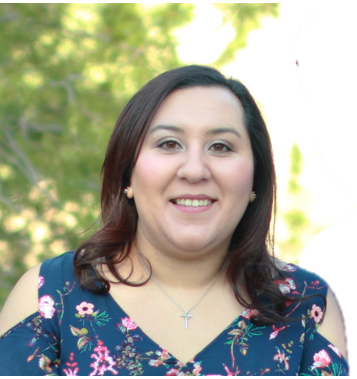

Marissa is a library assistant, going on for over four years. She is currently employed at Eastwood Middle School, after being at Eastwood High School for four years. She is currently enrolled in her last semester of graduate school at the University of North Texas in Denton, TX. She graduated from the University of Texas at El Paso in 2013 and brings a passion for libraries and digital literacy to her campus. She puts students' interests first and has a passion for all things tech.
Service is my number one priority. I have a background in data entry after working as a supervisor for an answering service for over six years. Details as small as the error of one number can prevent communication between two companies, such as an urgent medical call or an urgent attorney call.
I believe that it takes a special person to work in library services, especially in the age of digital literacy. Attention to detail, such as protecting one from "fake news" is important. Teaching these skills to our youth and adults will help create informed digital citizens. Teaching them attention to detail, such as the checking the url, consulting and comparing sources, and fact-checking stories is critical to their education.
Find me here!